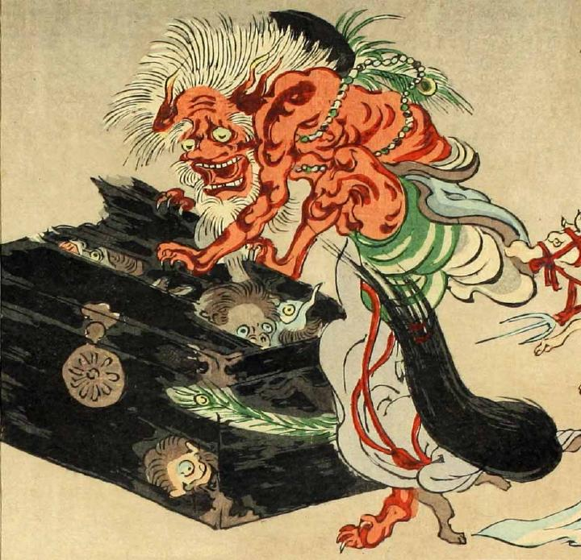

古い唐櫃をこじ開ける巨大な赤鬼。鋭い爪で唐櫃をつかみ、内にいる妖怪たちをにらみつけている。筋肉質の片足を唐櫃にかけている。青い布のようなものを腰に巻いており、孔雀の羽根をつけた黒い帽子をかぶり、首飾りをつけている。
著作者：洒落斎芳幾（歌川芳幾）／出典：親書誌：U426_nichibunken_0075：滑稽倭日史記；コッケイヤマトシキ／日付：2007／資源識別子：U426_nichibunken_0075_0041_0000
Copyright (c)2010- International Research Center for Japanese Studies, Kyoto, Japan. All rights reserved.